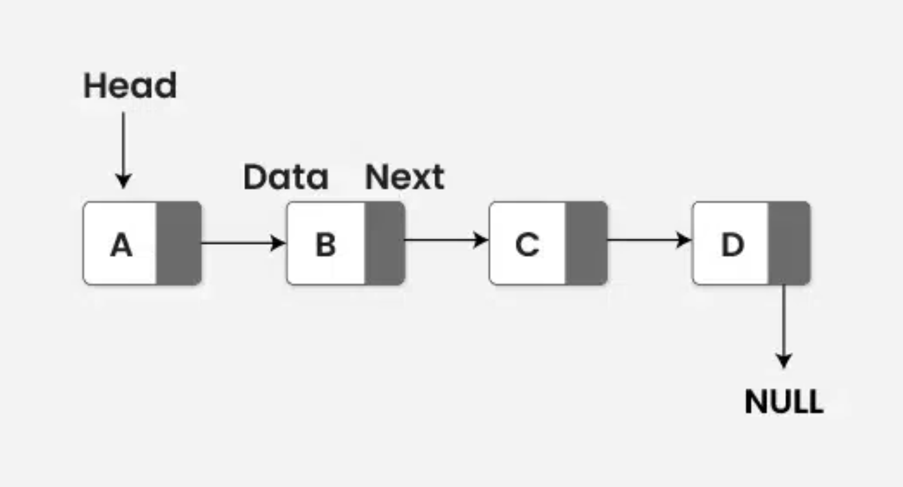

Linked Lists
A linked list is made of nodes. Each node stores data and a link to the next node. Linked lists do not require data to be stored next to each other in memory, which can make insertions and deletions easier.

Key idea
Instead of using indices like an array, you move through the list by following links: start at the head node, then follow the “next” reference until you reach the end.
Pros and cons
- Pro: Easy insert/delete near the front (no shifting)
- Con: Slow to access the middle (must traverse nodes)
Complexity (general idea)
- Access a specific position: often
O(n) - Insert/delete at head (with reference): often
O(1)
Types of Linked Lists
- Singly Linked List: Each node points to the next node
- Doubly Linked List: Each node points forward and backward
- Circular Linked List: The last node points back to the first
When to Use Linked Lists
Linked lists are useful when you need frequent insertions and deletions and do not require fast random access by index.